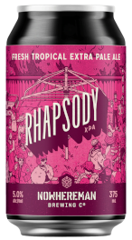

Rhapsody XPA
Nowhereman Brewing Co.
Leederville, Western Australia
375 mL can
5% Alc/Vol
An extra pale ale with light malts to support a tropical fruit storm of hops and a dry finish.
Nowhereman Brewing's first beer quickly became a permanent fixture on their menu. The light orange hue in the glass the echoes the sunshine in glass that waits as tropical aromas, notably passionfruit, and some citrus work in concert with sweet malts on the palate. The full flavoured yet lean body supports tight carbonation that amplifies the firm bitterness, with Rhapsody's length of palate befitting that of an ultra-marathon running brewer. All of which is resolved by a very dry, moreish coda.
Set within an odd little pocket of West Leederville, Nowhereman Brewing Co. is a destination, out of sight, but not out of reach. Our fresh beers and lovingly prepared foods are all waiting for you at our brewery just a couple of minutes walk from central Leederville.
Opened in 2017 Nowhereman is committed to fun times, great beer and supporting local. The bar showcases Western Australia's best spirits and wines, because we're a small local business so we support small local business. The local ethos resonates through everything we do, supporting local charities, local events, local clubs, and also helping build our local community.